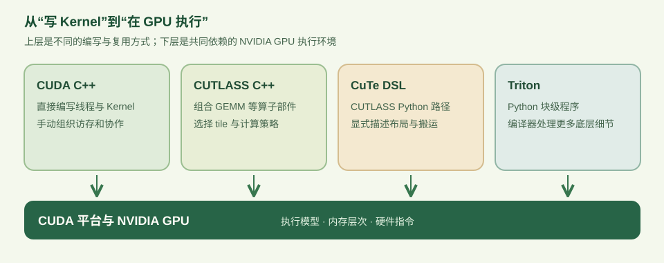
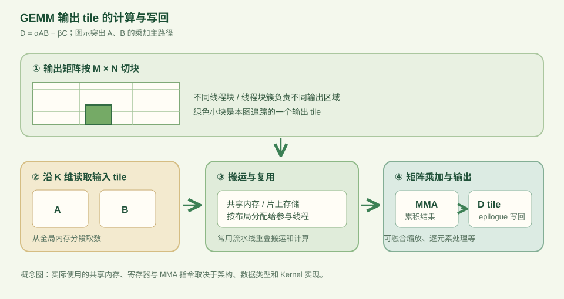

一句话认识 CUTLASS
CUTLASS 是 NVIDIA 提供的开源工具箱，核心目标是在 CUDA 上构建高性能的矩阵乘法（GEMM）及相关计算。它把分块、线程与数据的映射、内存搬运、矩阵乘加和输出处理拆成可以组合、替换的部件。这样写自定义 Kernel 时，不必每次都从最底层重新实现整条计算流水线。
它与 CUDA 的关系是“建立在 CUDA 之上”：Kernel 最终仍在 NVIDIA GPU 上按 CUDA 执行模型运行。CUTLASS 最早以 CUDA C++ 模板库为主；现在的官方文档同时覆盖 CUTLASS C++ 和用 Python 语法编写 Kernel 的 CUTLASS Python / CuTe DSL。因此，把 CUTLASS 简单等同于“一个 C++ GEMM 模板”已经不完整。
CUDA 提供 GPU 编程的基础平台与执行模型；CUTLASS 把高性能线性代数 Kernel 中反复出现的结构封装成可组合的积木。它的中心场景是 GEMM，但项目也包含卷积、归约和其他相关组件。

为什么从 GEMM 出发
GEMM（General Matrix Multiplication）通常写作 D = αAB + βC。矩阵乘法表面上只有乘加，但要跑得快，必须同时回答几件事：输出矩阵如何切给线程块？A、B 的子块怎样从全局内存进入更近的存储？哪些线程持有哪个元素？怎样调用合适的矩阵乘加指令？算完后如何把结果高效写回？
这些问题相互牵制。例如，更大的 tile 可增加数据复用，却可能消耗更多共享内存和寄存器；数据类型、矩阵形状、GPU 架构与输出融合操作也会改变合适的配置。CUTLASS 的价值在于把这些选择明确表达出来，并提供可复用的实现与调优入口。官方 Efficient GEMM in CUDA 用分层循环解释了这种设计。
一张图看懂分块与数据流
先把输出 D 沿 M、N 维划成许多 tile，让不同线程块或线程块簇处理不同区域。负责一个输出 tile 的计算单元再沿 K 维逐块读取 A 和 B，执行乘加并累积。输入 tile 可以先从全局内存搬到共享内存，再由参与计算的线程取用；累积结果最后经过 epilogue（收尾阶段） 写到输出，还可以顺手做缩放或逐元素操作。

| 步骤 | 解决的问题 | 常见对应概念 |
|---|---|---|
| 切分输出 | 把 M × N 的结果分配给并行的计算单元 | tile、grid、thread block / cluster |
| 搬运输入 | 把 A、B 的 K 子块带到计算附近并复用 | global memory、shared memory、copy |
| 执行乘加 | 将子块乘积累加为输出 tile | MMA、Tensor Core 或 SIMT 路径 |
| 写回输出 | 变换、融合并存储结果 | epilogue |
可以把 tiling 理解为“把大问题切成适合 GPU 并行和局部存储的小块”，把 pipeline 理解为“安排搬运与计算尽量重叠”。它们是理解 CUTLASS 性能设计的两条主线，但并不保证任意配置都会更快；实际仍要按目标形状和设备测量。
CUTLASS 里有什么
读官方仓库时，先区分两层：CUTLASS 是整个项目，CuTe 是其中描述布局、张量、数据搬运与矩阵乘加的一套核心抽象。CuTe 的 Layout 关注逻辑坐标如何映射到数据位置或线程，Tensor 则把数据访问与布局结合起来。这让“哪个线程负责哪个元素”成为可以直接表达和推理的对象。
在 CUTLASS 3.x 的 C++ GEMM API 中，官方按 Device → Kernel → Collective → Tiled MMA/Copy → Atom 介绍层次：外层封装调用与调度，中间组合 mainloop 和 epilogue，内层描述如何分块搬运和执行指令。初学时不必记住每个模板名，先看出“调用接口、组织一个 Kernel、完成数据流、落到硬件操作”即可。CUTLASS Python / CuTe DSL 则让作者用 Python 语法表达类似的布局与操作，同时保留对内存和线程组织的显式控制。
CuTe 不是 CUDA 的替代品。它是 CUTLASS 的布局与张量等组合抽象；CuTe DSL 是在 CUTLASS Python 中使用这些概念写 Kernel 的路径。传统 CUTLASS C++ 与 CuTe DSL 都属于 CUTLASS 生态，但语言和开发流程不同。
和 CUDA、Triton 放在一起看
这三者不在同一个抽象层级，因此更适合按“写 Kernel 时主要由谁负责什么”来比较。CUDA 是基础平台与编程模型；CUTLASS 和 Triton 都可以用来构建运行于 GPU 的 Kernel。CUTLASS 的 C++ 路径与 CuTe DSL 路径差异也很大，不能只用“C++ 对 Python”概括。
| 路径 | 主要编写视角 | 自己重点处理的事 | 典型起点 |
|---|---|---|---|
| CUDA C++ | 线程、线程块、内存和 Kernel | 直接组织索引、协作、搬运和计算 | 想掌握底层执行模型或写通用 Kernel |
| CUTLASS C++ | 组合 GEMM / 相关算子的模板部件 | 选数据类型、tile、调度、mainloop 和 epilogue | 为 NVIDIA GPU 构建可定制的高性能线性代数 Kernel |
| CUTLASS Python / CuTe DSL | 用 Python 语法显式描述布局、搬运和计算 | 映射线程与数据，安排存储层次和流水线 | 想用 Python 编写并精细控制 NVIDIA GPU Kernel |
| Triton | Python 中的块级张量程序 | 定义每个 program 处理的数据块与运算，再调优配置 | 快速迭代自定义深度学习 Kernel |
例如写矩阵乘法：裸 CUDA C++ 需要自己搭起从分块到写回的完整逻辑；CUTLASS C++ 可组合现成的 GEMM 结构并指定关键策略；CuTe DSL 把布局和数据移动直接放进 Python Kernel；Triton 常从“一个 program 计算一个输出 tile”的角度书写，让编译器处理更多布局与底层资源决策。两条 Python 路径都能做精细优化，具体能控制什么要看所用 API 与版本。
这里的“易写”“更快”都没有固定赢家：不同矩阵形状、数据类型、GPU 世代和调优投入会改变结果。Triton 官方文档把它定义为并行编程语言与编译器；CUTLASS Python Overview强调显式控制 GPU 的内存、线程和数据层次。
什么时候值得用 CUTLASS
- 需求以 GEMM 或相近的密集线性代数为中心，需要针对形状、精度、布局或输出融合做定制。
- 想复用 NVIDIA 已实现的分块、搬运和指令级部件，再针对自己的计算调整某一环。
- 希望系统学习高性能 GPU Kernel 如何安排数据移动、Tensor Core 计算与流水线。
如果只需要调用标准矩阵乘法，先使用已有的高层库通常更直接；如果是在学习通用 GPU 线程模型，先写 CUDA 小 Kernel 更容易建立基础；如果要快速尝试自定义块级算子，Triton 也是自然的起点。CUTLASS 最适合的问题是：标准算子不够贴合需求，而你又希望复用成熟的低层计算结构。
接下来怎么读
- 先读 CUTLASS 仓库总览，知道项目包含 C++、CuTe、Python DSL、示例和工具。
- 读 Efficient GEMM in CUDA，沿着输出分块、数据搬运、MMA 和 epilogue 再走一遍。
- 选择一条实践路线：C++ Quickstart，或 CUTLASS Python Quick Start。
- 遇到布局问题，再看 CUTLASS 3.x Design 和 CuTe Layouts。
资料核对时间：2026 年 10 月。本文示意图依据官方文档重新绘制，用于解释概念，不代表某个具体架构的精确硬件布线。